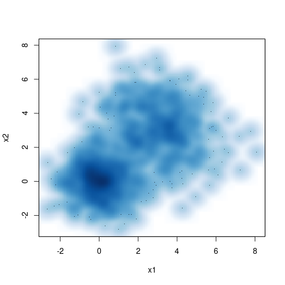

A New Output Format
html_pretty in the prettydoc package is a new output format for creating HTML documents from R Markdown files. html_pretty is more lightweight compared to html_document, and is more stylish than html_vignette when creating package vignettes.
New Styles
html_pretty currently supports three page themes (cayman, tactile and architect), and two syntax highlight styles (github and vignette). The theme and highlight styles can be specified in the document metadata, for example:
output:
prettydoc::html_pretty:
theme: architect
highlight: githubYour Familiar Tools
Feel free to use the knitr infrastructure with dozens of tunable options in your document.
set.seed(123)
n <- 1000
x1 <- matrix(rnorm(n), ncol = 2)
x2 <- matrix(rnorm(n, mean = 3, sd = 1.5), ncol = 2)
x <- rbind(x1, x2)
head(x)## [,1] [,2]
## [1,] -0.56047565 -0.60189285
## [2,] -0.23017749 -0.99369859
## [3,] 1.55870831 1.02678506
## [4,] 0.07050839 0.75106130
## [5,] 0.12928774 -1.50916654
## [6,] 1.71506499 -0.09514745smoothScatter(x, xlab = "x1", ylab = "x2")
You can include code snippets of languages other than R, but note that the block header has no curly brackets around the language name.
// [[Rcpp::export]]
NumericVector timesTwo(NumericVector x) {
return x * 2;
}You can also write math expressions, e.g. \(Y = X\beta + \epsilon\), footnotes1, and tables, e.g. using knitr::kable().
| Sepal.Length | Sepal.Width | Petal.Length | Petal.Width | Species |
|---|---|---|---|---|
| 5.1 | 3.5 | 1.4 | 0.2 | setosa |
| 4.9 | 3.0 | 1.4 | 0.2 | setosa |
| 4.7 | 3.2 | 1.3 | 0.2 | setosa |
| 4.6 | 3.1 | 1.5 | 0.2 | setosa |
| 5.0 | 3.6 | 1.4 | 0.2 | setosa |
| 5.4 | 3.9 | 1.7 | 0.4 | setosa |
| 4.6 | 3.4 | 1.4 | 0.3 | setosa |
| 5.0 | 3.4 | 1.5 | 0.2 | setosa |
| 4.4 | 2.9 | 1.4 | 0.2 | setosa |
| 4.9 | 3.1 | 1.5 | 0.1 | setosa |
Stay Tuned
Please visit the development page of the prettydoc package for latest updates and news. Comments, bug reports and pull requests are always welcome.
A footnote here.↩︎